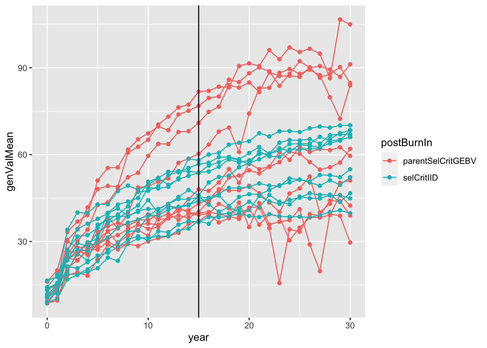

Empirically-driven simulation of an existing cassava GS program
Marnin Wolfe
2021-08-13
Last updated: 2021-08-19
Checks: 7 0
Knit directory: BreedingSchemeOpt/
This reproducible R Markdown analysis was created with workflowr (version 1.6.2). The Checks tab describes the reproducibility checks that were applied when the results were created. The Past versions tab lists the development history.
Great! Since the R Markdown file has been committed to the Git repository, you know the exact version of the code that produced these results.
Great job! The global environment was empty. Objects defined in the global environment can affect the analysis in your R Markdown file in unknown ways. For reproduciblity it’s best to always run the code in an empty environment.
The command set.seed(20210422) was run prior to running the code in the R Markdown file. Setting a seed ensures that any results that rely on randomness, e.g. subsampling or permutations, are reproducible.
Great job! Recording the operating system, R version, and package versions is critical for reproducibility.
Nice! There were no cached chunks for this analysis, so you can be confident that you successfully produced the results during this run.
Great job! Using relative paths to the files within your workflowr project makes it easier to run your code on other machines.
Great! You are using Git for version control. Tracking code development and connecting the code version to the results is critical for reproducibility.
The results in this page were generated with repository version 5914d8d. See the Past versions tab to see a history of the changes made to the R Markdown and HTML files.
Note that you need to be careful to ensure that all relevant files for the analysis have been committed to Git prior to generating the results (you can use wflow_publish or wflow_git_commit). workflowr only checks the R Markdown file, but you know if there are other scripts or data files that it depends on. Below is the status of the Git repository when the results were generated:
Ignored files:
Ignored: .DS_Store
Ignored: .Rhistory
Ignored: .Rproj.user/
Ignored: analysis/.DS_Store
Ignored: analysis/images/.DS_Store
Ignored: data/.DS_Store
Untracked files:
Untracked: data/baselineScheme.gsheet
Untracked: output/benchmark_sim.rds
Untracked: output/benchmark_sims5.rds
Unstaged changes:
Modified: data/README.md
Note that any generated files, e.g. HTML, png, CSS, etc., are not included in this status report because it is ok for generated content to have uncommitted changes.
These are the previous versions of the repository in which changes were made to the R Markdown (analysis/baselineSim.Rmd) and HTML (docs/baselineSim.html) files. If you’ve configured a remote Git repository (see ?wflow_git_remote), click on the hyperlinks in the table below to view the files as they were in that past version.
| File | Version | Author | Date | Message |
|---|---|---|---|---|
| Rmd | 5914d8d | wolfemd | 2021-08-19 | Publish initial sims towards a baseline set of sims using runBreedingScheme_wBurnIn |
| Rmd | c2e379e | wolfemd | 2021-08-13 | Rebuild repo removing the “Group” part. Project is to contain BOTH the “Group” and a separate section just for the actual simulation analyses. |
See here for an analysis of IITA trial data to derive empirical inputs for this analysis. I analyzed trial-by-trial to measure selection error and associate it with plot-size. While inconclusive, this exercise emphasized a key concern for conducting simulations that alter the VDP: that the cost-benefit balance could depend on the relative information value/selection accuracy/error variance of different plot sizes and trial configurations.
As a result, I decided to simulate a range of error-vs-plot size scaling as part of the “baseline” simulations, starting with IITA as an example.
If we observe a shift-point in the cost-benefit analysis we can then work with breeding programs to determine where their data indicate they lie and what changes are subsequently recommended.
Develop a simulation with burn-in PS
- First thing is to complete un-finished work (started here) and build a
runBreedingScheme_wBurnIn()function intoAlphaSimHlpR. The new function enables a switch in selection criteria after a certain number of cycles, e.g. a phenotypic selection “burn-in” period followed by GS. - Previously, used control files to set-up
bsp. ImplementedspecifyBSP()which creates abspusing adata.frameof stage-specific breeding scheme plus all otherAlphaSimHlpRarguments as inputs. - I fully documented all new functions, integrated them into my forked-repo of
AlphaSimHlpRand built apkgdownweb-documentation: here - (click the function refs above to see their specific details)
- Below, a quick demo before subsequently setting up a bigger analysis
Set-up a singularity shell with R+OpenBLAS
This is not required. If you want the advantage of multi-threaded BLAS to speed up predictions within the simulations, you need an R instance that is linked to OpenBLAS (another example is Microsoft R Open). For CBSU, the recommended approach is currently to use singularity shells provided by the “rocker” project. They even come pre-installed with tidyverse :).
Linked to OpenBLAS, using a simple function RhpcBLASctl::blas_set_num_threads() I can add arguments to functions to control this feature.
For optimal performance, it is import to balance the number of threads each R session uses for BLAS against any other form of parallel processing being used and considering total available system resources.
# 0) Pull a singularity image with OpenBLAS enabled R + tidyverse from rocker/
singularity pull ~/rocker2.sif docker://rocker/tidyverse:latest;
# only do above first time
# 1) start a screen shell
screen; # or screen -r if re-attaching...
# 3) start the singularity Linux shell inside that
singularity shell ~/rocker2.sif;
# Project directory, so R will use as working dir.
cd /home/mw489/BreedingSchemeOpt/;
# 3) Start R
R# Install genomicMateSelectR to user-accessible libPath
### In a singularity shell, sintall as follows:
libPath<-"/home/mw489/R/x86_64-pc-linux-gnu-library/4.1" # should be YOUR libPath
withr::with_libpaths(new=libPath, devtools::install_github("wolfemd/genomicMateSelectR", ref = 'master'))
### Else, simply
devtools::install_github("wolfemd/genomicMateSelectR", ref = 'master')
# Install my own forked repo of AlphaSimHlpR
withr::with_libpaths(new=libPath, install.packages("Rcpp"))
withr::with_libpaths(new=libPath, install.packages("AlphaSimR"))
withr::with_libpaths(new=libPath, install.packages("optiSel"))
withr::with_libpaths(new=libPath, install.packages("rgl"))
withr::with_libpaths(new=libPath, devtools::install_github("wolfemd/AlphaSimHlpR", ref = 'master', force=T))A small example
suppressMessages(library(AlphaSimHlpR))
suppressMessages(library(tidyverse))
suppressMessages(library(genomicMateSelectR))
select <- dplyr::selectRun two cycles pre- and post with a small breeding scheme. Runs on a laptop.
Use my newly created specifyBSP() function to create the bsp input for sims.
- 3 chrom, Ne = 100, 300 SNP (100/chrom)
- Select 10 parents, make 4 random crosses with 50 progeny each
schemeDF<-read.csv(here::here("data","baselineScheme - Test.csv"),
header = T, stringsAsFactors = F)
bsp<-specifyBSP(schemeDF = schemeDF,
nChr = 3,effPopSize = 100,quickHaplo = F,
segSites = 400, nQTL = 40, nSNP = 100, genVar = 40,
gxeVar = NULL, gxyVar = 15, gxlVar = 10,gxyxlVar = 5,
meanDD = 0.5,varDD = 0.01,relAA = 0.5,
stageToGenotype = "PYT",
nParents = 10, nCrosses = 4, nProgeny = 50,nClonesToNCRP = 3,
phenoF1toStage1 = T,errVarPreStage1 = 500,
useCurrentPhenoTrain = F,
nCyclesToKeepRecords = 30,
selCritPipeAdv = selCritIID,
selCritPopImprov = selCritIID)I created a CSV to specify a data.frame schemeDF defining stage-specific breeding scheme inputs.
schemeDF %>% rmarkdown::paged_table()Now run runBreedingScheme_wBurnIn() which will simulate PS for burn-in cycles and GS post burn-in. Use selCritIID for VDP. Notice the new parentSelCritGEBV which is so far the same as selCritGRM but lays groundwork for mate selection and non-additive effects related sims.
test_sim<-runBreedingScheme_wBurnIn(replication = 1, bsp = bsp,
nBurnInCycles=2,nPostBurnInCycles=2,
selCritPopPre="selCritIID",
selCritPopPost="parentSelCritGEBV",
selCritPipePre="selCritIID",
selCritPipePost="selCritIID",
nBLASthreads=3,nThreadsMacs2=3)
saveRDS(test_sim,file = here::here("output","test_sim.rds"))test_sim<-readRDS(here::here("output","test_sim.rds"))
test_sim$records$stageOutputs %>%
ggplot(.,aes(x=year,y=genValMean,color=stage)) +
geom_point() + geom_line() + geom_vline(xintercept = 2)
This plot shows the mean genetic value (y-axis) by pipeline-stage (colors) versus the year. The vertical line indicates the point after which GS (parentSelCritGEBV) was used.
Run two cycles of IITA-sized GS
First run a benchmark sim. How long will two cycles of IITA-sized GS rep take?
After benchmarking, I will run a bigger analysis, with multiple iterations times a range of parameter settings. Will use at least one full large memory server for that (112 cores, 512GB RAM). Benchmark using cbsurobbins.biohpc.cornell.edu, which now uses SLURM. Reserve and set-up an interactive SLURM shell as follows:
# 1) start a screen shell
screen;
# 2) reserve interactive slurm
salloc -n 10 --mem 60G;
# 3) start the singularity Linux shell inside that
singularity shell ~/rocker2.sif;
# Project directory, so R will use as working dir.
cd /home/mw489/BreedingSchemeOpt/;
# 3) Start R
RsuppressMessages(library(AlphaSimHlpR))
suppressMessages(library(tidyverse))
suppressMessages(library(genomicMateSelectR))
select <- dplyr::select
# This scheme _excludes_ the seedling stage from the simulation.
schemeDF<-read.csv(here::here("data","baselineScheme - IITA.csv"),
header = T, stringsAsFactors = F)schemeDF %>% rmarkdown::paged_table()- 6 chrom, Ne = 1000, 600 SNP (100/chrom)
genVar = 100anderrVarstarting at 100- Select 50 parents, Make 100 random crosses with 25 progeny each
nCyclesToKeepRecords = 30trainingPopCycles = 15for all stages.- 5 cores for BLAS
bsp<-specifyBSP(schemeDF = schemeDF,
nChr = 6,effPopSize = 1000,quickHaplo = F,
segSites = 500, nQTL = 50, nSNP = 100, genVar = 100,
gxeVar = NULL, gxyVar = 15, gxlVar = 10,gxyxlVar = 5,
meanDD = 1,varDD = 5,relAA = 0.1,
stageToGenotype = "CET",
nParents = 50, nCrosses = 100, nProgeny = 25,nClonesToNCRP = 3,
phenoF1toStage1 = F,errVarPreStage1 = 500,
useCurrentPhenoTrain = F,
nCyclesToKeepRecords = 30,
# selCrits are overwritten by runBreedingScheme_wBurnIn
selCritPipeAdv = selCritIID, # thus have no actual effect
selCritPopImprov = selCritIID) starttime<-proc.time()[3]
benchmark_sim<-runBreedingScheme_wBurnIn(replication = 1, bsp = bsp,
nBurnInCycles=2,nPostBurnInCycles=2,
selCritPopPre="selCritIID",
selCritPopPost="parentSelCritGEBV",
selCritPipePre="selCritIID",
selCritPipePost="selCritIID",
nBLASthreads=5,nThreadsMacs2=5)
endtime<-proc.time()[3]; print(paste0((endtime-starttime)/60," mins elapsed."));
saveRDS(benchmark_sim,file = here::here("output","benchmark_sim.rds"))
# [1] "866.377616666667 mins elapsed."
# ~14 hrs for 2 cycles of GS.~14 hrs for 2 cycles of GS. Up to 40 or 50GB RAM.
readRDS(here::here("output","benchmark_sim.rds"))$records$stageOutputs %>%
ggplot(.,aes(x=year,y=genValMean,color=stage)) +
geom_point() + geom_line() + geom_vline(xintercept = 2)
This plot shows the mean genetic value (y-axis) by pipeline-stage (colors) versus the year. The vertical line indicates the point after which GS (parentSelCritGEBV) was used. Obviously this is a test. So not digging in more yet.
Run a scaled-down simulation
It seems prudent to scale down and run additional tests, before scaling back up for full experiments.
cbsulm09,
Reduce to
trainingPopCycles=5Reduce pop size to 1/3 scale
nEntries=ceiling(nEntries/3)nChks=ceiling(nChks/3)- Select 17 parents, Make 33 random crosses with 26 progeny each
- Reduce to 3 chrom, Ne = 500, 300 SNP (100/chrom)
screen;
singularity shell ~/rocker2.sif;
cd /home/mw489/BreedingSchemeOpt/;
RsuppressMessages(library(AlphaSimHlpR))
suppressMessages(library(tidyverse))
suppressMessages(library(genomicMateSelectR))
select <- dplyr::select
# This scheme _excludes_ the seedling stage from the simulation.
schemeDF<-read.csv(here::here("data","baselineScheme - IITA.csv"),
header = T, stringsAsFactors = F) %>%
dplyr::select(-PlantsPerPlot) %>%
dplyr::mutate(trainingPopCycles=5,
nEntries=ceiling(nEntries/3),
nChks=ceiling(nChks/3))schemeDF %>% rmarkdown::paged_table()bsp<-specifyBSP(schemeDF = schemeDF,
nChr = 3,effPopSize = 500,quickHaplo = F,
segSites = 200, nQTL = 30, nSNP = 100, genVar = 100,
gxeVar = NULL, gxyVar = 15, gxlVar = 10,gxyxlVar = 5,
meanDD = 1,varDD = 5,relAA = 0.1,
stageToGenotype = "CET",
nParents = 17, nCrosses = 33, nProgeny = 26,nClonesToNCRP = 3,
phenoF1toStage1 = F,errVarPreStage1 = 500,
useCurrentPhenoTrain = F,
nCyclesToKeepRecords = 5,
# selCrits are overwritten by runBreedingScheme_wBurnIn
selCritPipeAdv = selCritIID,
selCritPopImprov = selCritIID) # thus have no actual effectRan the scaled down simulation three times
Set
nBLASthreads=60to go as-fast-as-possible… Took 7 mins.Set a more reasonable
nBLASthreads=5to see how much speed comes from scaled-down sim. size… Took 10 mins.Ran
nBurnInCycles=15andnPostBurnInCycles=15… took 68 mins.
starttime<-proc.time()[3]
benchmark_sim2<-runBreedingScheme_wBurnIn(replication = 1, bsp = bsp,
nBurnInCycles=2,nPostBurnInCycles=2,
selCritPopPre="selCritIID",
selCritPopPost="parentSelCritGEBV",
selCritPipePre="selCritIID",
selCritPipePost="selCritIID",
nBLASthreads=60,nThreadsMacs2=60)
endtime<-proc.time()[3]; print(paste0((endtime-starttime)/60," mins elapsed."));
saveRDS(benchmark_sim2,file = here::here("output","benchmark_sim2.rds"))
# [1] "6.93941666666667 mins elapsed."
starttime<-proc.time()[3]
benchmark_sim3<-runBreedingScheme_wBurnIn(replication = 1, bsp = bsp,
nBurnInCycles=2,nPostBurnInCycles=2,
selCritPopPre="selCritIID",
selCritPopPost="parentSelCritGEBV",
selCritPipePre="selCritIID",
selCritPipePost="selCritIID",
nBLASthreads=5,nThreadsMacs2=5)
endtime<-proc.time()[3]; print(paste0((endtime-starttime)/60," mins elapsed."));
saveRDS(benchmark_sim3,file = here::here("output","benchmark_sim3.rds"))
# [1] "10.0116333333333 mins elapsed."
starttime<-proc.time()[3]
benchmark_sim4<-runBreedingScheme_wBurnIn(replication = 1, bsp = bsp,
nBurnInCycles=15,nPostBurnInCycles=15,
selCritPopPre="selCritIID",
selCritPopPost="parentSelCritGEBV",
selCritPipePre="selCritIID",
selCritPipePost="selCritIID",
nBLASthreads=5,nThreadsMacs2=5)
endtime<-proc.time()[3]; print(paste0((endtime-starttime)/60," mins elapsed."));
saveRDS(benchmark_sim4,file = here::here("output","benchmark_sim4.rds"))
# [1] "67.8371833333333 mins elapsed."readRDS(here::here("output","benchmark_sim4.rds"))$records$stageOutputs %>%
ggplot(.,aes(x=year,y=genValMean,color=stage)) +
geom_point() + geom_line() + geom_vline(xintercept = 15)
Run multiple scaled-down sims in parallel
Set-up 10 iterations of a simulation with 15 pre- and 15-post burn-in cycles.
For a bonus, set-up 10 additional iterations that uses PS (selCritIID the entire 30 cycles).
Made a few changes to the sims so they would exhaust variation (hopefully):
- Increase to
effPopSize=1000 - Increase stage-specific errors:
errVars*3 - Increase
gxyVar,gxlVar,gxyxlVar.
Also:
- Increase to
trainingPopCycles=10to use more training data - Set
nCyclesToKeepRecords = 30to keep all records
screen;
singularity shell ~/rocker2.sif;
cd /home/mw489/BreedingSchemeOpt/;
RsuppressMessages(library(AlphaSimHlpR))
suppressMessages(library(tidyverse))
suppressMessages(library(genomicMateSelectR))
select <- dplyr::select
# This scheme _excludes_ the seedling stage from the simulation.
schemeDF<-read.csv(here::here("data","baselineScheme - IITA.csv"),
header = T, stringsAsFactors = F) %>%
select(-PlantsPerPlot) %>%
mutate(trainingPopCycles=10,
nEntries=ceiling(nEntries/3),
nChks=ceiling(nChks/3),
errVars=errVars*3)
bsp<-specifyBSP(schemeDF = schemeDF,
nChr = 3,effPopSize = 1000,quickHaplo = F,
segSites = 200, nQTL = 30, nSNP = 100, genVar = 200,
gxeVar = NULL, gxyVar = 20, gxlVar = 15,gxyxlVar = 10,
meanDD = 1,varDD = 5,relAA = 0.1,
stageToGenotype = "CET",
nParents = 17, nCrosses = 33, nProgeny = 26,nClonesToNCRP = 3,
phenoF1toStage1 = F,errVarPreStage1 = 500,
useCurrentPhenoTrain = F,
nCyclesToKeepRecords = 30,
# selCrits are overwritten by runBreedingScheme_wBurnIn
selCritPipeAdv = selCritIID,
selCritPopImprov = selCritIID) # thus have no actual effect
benchmark_sims<-crossing(replication=1:10,
postBurnIn=c("parentSelCritGEBV","selCritIID")) %>%
arrange(postBurnIn)benchmark_sims %>% rmarkdown::paged_table()Run 10 sims in parallel, each sim gets 10 additional threads for BLAS to speed GP.
starttime<-proc.time()[3]
require(furrr); plan(multisession, workers = 10)
options(future.globals.maxSize=+Inf); options(future.rng.onMisuse="ignore")
benchmark_sims %<>%
mutate(sim=future_map2(replication,postBurnIn,
~runBreedingScheme_wBurnIn(replication = .x,
bsp = bsp,
nBurnInCycles=15,nPostBurnInCycles=15,
selCritPopPre="selCritIID",
selCritPopPost=.y,
selCritPipePre="selCritIID",
selCritPipePost="selCritIID",
nBLASthreads=10,nThreadsMacs2=10)))
endtime<-proc.time()[3]; print(paste0((endtime-starttime)/60," mins elapsed."));
saveRDS(benchmark_sims,file = here::here("output","benchmark_sims5.rds"))
plan(sequential)
# [1] "499.316183333333 mins elapsed."Took ~8.3 hrs to run.
sims<-readRDS(here::here("output","benchmark_sims5.rds"))
sims %>%
mutate(sim=map(sim,~.$records$stageOutputs)) %>%
unnest(sim) %>%
filter(stage=="CET") %>%
mutate(rep=paste0(postBurnIn,replication)) %>%
#as.character(replication)) %>%
#stage=factor(stage,levels = c("F1","CET","PYT","AYT","UYT")))
ggplot(.,aes(x=year,y=genValMean,color=postBurnIn, group=rep)) +
geom_point() + geom_line() + geom_vline(xintercept = 15)
Plot the mean genetic value (y-axis) of the “CET” stage for all 20 simulations (10 with selCritIID PS and 10 with parentSelCritGEBV GS used after the first 15 cycles of PS). NOTE: In retrospect, it is not entirely fair to compare the post-burn-in PS (blue) and GS (red). Next time, I will set-up a runBreedingScheme function that simulations a single population pre-burn-in and then diverges that population post-burn-in. A proper simulation would diver
Questions and next steps
Correct
runBreedingScheme_wBurnInto diverge single pop after burn-in.I am not yet seeing a notable effect of switching from PS to GS after 15 cycles. What parameters need to be changed?
How to handle all the breeding simulation options, e.g.:
Ne,
entryToChkRatio, etc.Similar approach to with plot size…. simulate a spectrum and check for an effect?
- Develop and test a errVar-plotSize scaling function
- Complete a baseline simulation
- Test alternative mate selection scenarios, etc.
sessionInfo()R version 4.1.0 (2021-05-18)
Platform: x86_64-apple-darwin17.0 (64-bit)
Running under: macOS Big Sur 10.16
Matrix products: default
BLAS: /Library/Frameworks/R.framework/Versions/4.1/Resources/lib/libRblas.dylib
LAPACK: /Library/Frameworks/R.framework/Versions/4.1/Resources/lib/libRlapack.dylib
locale:
[1] en_US.UTF-8/en_US.UTF-8/en_US.UTF-8/C/en_US.UTF-8/en_US.UTF-8
attached base packages:
[1] stats graphics grDevices utils datasets methods base
other attached packages:
[1] genomicMateSelectR_0.2.0 forcats_0.5.1 stringr_1.4.0
[4] purrr_0.3.4 readr_2.0.1 tidyr_1.1.3
[7] tibble_3.1.3 ggplot2_3.3.5 tidyverse_1.3.1
[10] AlphaSimHlpR_0.2.1 dplyr_1.0.7 AlphaSimR_1.0.3
[13] R6_2.5.0 workflowr_1.6.2
loaded via a namespace (and not attached):
[1] Rcpp_1.0.7 here_1.0.1 lubridate_1.7.10 assertthat_0.2.1
[5] rprojroot_2.0.2 digest_0.6.27 utf8_1.2.2 cellranger_1.1.0
[9] backports_1.2.1 reprex_2.0.1 evaluate_0.14 highr_0.9
[13] httr_1.4.2 pillar_1.6.2 rlang_0.4.11 readxl_1.3.1
[17] rstudioapi_0.13 whisker_0.4 jquerylib_0.1.4 rmarkdown_2.10
[21] labeling_0.4.2 munsell_0.5.0 broom_0.7.9 compiler_4.1.0
[25] httpuv_1.6.1 modelr_0.1.8 xfun_0.25 pkgconfig_2.0.3
[29] htmltools_0.5.1.1 tidyselect_1.1.1 fansi_0.5.0 crayon_1.4.1
[33] tzdb_0.1.2 dbplyr_2.1.1 withr_2.4.2 later_1.2.0
[37] grid_4.1.0 jsonlite_1.7.2 gtable_0.3.0 lifecycle_1.0.0
[41] DBI_1.1.1 git2r_0.28.0 magrittr_2.0.1 scales_1.1.1
[45] cli_3.0.1 stringi_1.7.3 farver_2.1.0 fs_1.5.0
[49] promises_1.2.0.1 xml2_1.3.2 bslib_0.2.5.1 ellipsis_0.3.2
[53] generics_0.1.0 vctrs_0.3.8 tools_4.1.0 glue_1.4.2
[57] hms_1.1.0 yaml_2.2.1 colorspace_2.0-2 rvest_1.0.1
[61] knitr_1.33 haven_2.4.3 sass_0.4.0